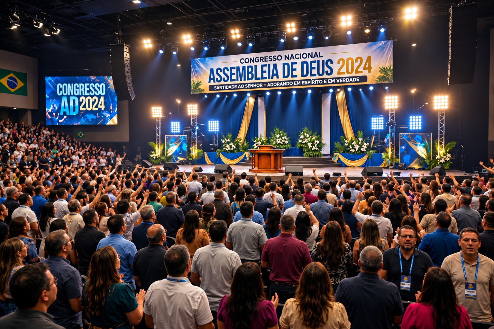

Ao longo da história da Igreja, o ajuntamento dos santos sempre teve um propósito solene: exaltar a santidade de Deus, pregar a Palavra com fidelidade e promover a comunhão sincera no Espírito. No entanto, o cenário denominacional contemporâneo deformou profundamente o conceito de congressos, simpósios e aniversários eclesiásticos. O altar, que deveria ser o lugar da exposição bíblica e do quebrantamento, foi convertido em palco para shows gospel, entretenimento de massas e exibicionismo pessoal.
Empresários da fé e lideranças narcisistas transformaram eventos espirituais em grandes balcões de negócios. Gastam-se somas elevadas com estruturas pirotécnicas, luzes cênicas, fumaça e cachês de cantores e pregadores performáticos, enquanto a membrezia é reduzida a mero público pagante. Essa mercantilização do sagrado reitera a mesma severidade do julgamento divino proclamado pelo profeta Amós contra a religiosidade superficial:
"Odeio, desprezo as vossas festas, e as vossas assembleias solenes não me causam prazer... Afasta de mim o estrépito dos teus cânticos; porque não ouvirei as melodias dos teus instrumentos. Corra, porém, o juízo como as águas, e a justiça como o ribeiro impetuoso."
— Amós 5:21, 23-24
Para discernir a falsificação moderna, é indispensável examinar o modelo original estabelecido por Deus. Em Levítico 23, as celebrações são chamadas no hebraico de מֹועֲדֵי יְהוָה (Mo'adei YHWH), que significa "tempos determinados" ou "encontros marcados por Deus", e מִקְרָאֵי-קֹדֶשׁ (Mikra'ei Kodesh), "santas convocações". Cada festa era um ensaio profético projetado rigorosamente para apontar para a pessoa e a obra redentora de Jesus Cristo.
Celebrada em 14 de Nissan, a palavra deriva da raiz pasach (passar por cima, poupar). Em Êxodo 12, exigia-se o abate de um cordeiro sem defeito, cujo sangue nos umbrais protegia os primogênitos do juízo. Exegese Neotestamentária: Cumpre-se na morte expiatória de Cristo. Paulo declara: "Porque Cristo, nossa páscoa, foi sacrificado por nós" (1 Coríntios 5:7). Ele é o Cordeiro imaculado que tira o pecado do mundo (João 1:29; 1 Pedro 1:18-19).
Com início em 15 de Nissan, durava sete dias. O termo matzah refere-se ao pão sem fermento. O se'or (fermento/levedura) deveria ser completamente eliminado das casas, simbolizando a remoção da corrupção. Exegese Neotestamentária: Aponta para a sepultura de Cristo e para a vida de santidade contínua requerida da igreja: "Pelo que façamos festa, não com o fermento velho... mas com os ázimos da sinceridade e da verdade" (1 Coríntios 5:8).
Realizada no dia seguinte ao sábado da semana pascal, marcava o oferecimento do primeiro molho da colheita de cevada perante o Senhor. Exegese Neotestamentária: Cumpre-se na ressurreição de Cristo no primeiro dia da semana. Ele é a garantia da colheita futura dos remidos. Como afirma o texto sagrado: "Mas de fato Cristo ressuscitou dentre os mortos, e foi feito as primícias dos que dormem" (1 Coríntios 15:20).
Celebrada cinquenta dias após a oferta das Primícias, assinalava o fim da colheita do trigo e a entrega da Torá no Monte Sinai. Exegese Neotestamentária: Cumpre-se em Atos 2 no derramamento do Espírito Santo sobre os discípulos. A Lei divina deixa de ser um código externo em pedras para ser gravada diretamente no coração do crente (Jeremias 31:33; 2 Coríntios 3:3).
Celebrada no primeiro dia do mês de Tishrei, era caracterizada pelo toque do Shofar. A palavra teruah indica um clamor, um alarde ou toque de convocação e guerra. Exegese Neotestamentária: Prefigura o despertamento final do povo de Deus e o evento glorioso do Arrebatamento da Igreja ao som da última trombeta divina (1 Tessalonicenses 4:16; 1 Coríntios 15:52).
Ocorria no décimo dia de Tishrei, sendo a data mais solene do calendário judaico (Shabbat Shabbaton). O Sumo Sacerdote adentrava o Santo dos Santos para aspergir o sangue do sacrifício e cobrir (kaphar) as transgressões da nação. Exegese Neotestamentária: Aponta para o sacrifício supremo de Cristo, que apresentou Seu próprio sangue no santuário celestial para obter uma eterna redenção (Hebreus 9:11-12, 24-26).
Iniciada no décimo quinto dia de Tishrei, durava sete dias. O povo habitava em tendas temporárias (sukkot) para recordar a preservação no deserto e celebrar a colheita final. Exegese Neotestamentária: Antecipa a encarnação de Cristo (João 1:14) e projeta o Reino Milenar e a Nova Jerusalém, onde Deus habitará visivelmente com os homens para sempre (Apocalipse 21:3).
Ao confrontar a profundidade desse ciclo bíblico com o espetáculo promovido pelas igrejas hodiernas, o texto de Lucas 2 revela um alerta de extrema gravidade. O evangelista registra o regresso de Maria e José de Jerusalém após celebrarem a Páscoa:
"E, acabados aqueles dias, regressando eles, ficou o menino Jesus em Jerusalém, e não o souberam seus pais. Pensando, porém, eles que estava entre a companhia, andaram caminho de um dia, e buscavam-no entre os parentes e conhecidos; e, como o não encontrassem, voltaram a Jerusalém buscando-o."
— Lucas 2:43-45
A análise exegética dessa passagem expõe uma contradição perturbadora: a família de Nazaré cumpriu a rotina litúrgica, participou das cerimônias do Templo, mas, ao iniciar a viagem de volta, esqueceu o próprio Senhor da Festa para trás. Caminharam um dia inteiro na pressa do regresso, alimentando a falsa presunção de que Jesus estava no meio da caravana apenas porque havia barulho e multidão ao redor.
Esse fato histórico retrata a condição de muitas denominações evangélicas na atualidade. Promovem-se megaeventos, preenchem-se agendas com cantores famosos e pregações emotivas, mas o Cristo das Escrituras é deixado de fora. Lideranças e fiéis caminham na ilusão de que a presença de Deus habita no ambiente unicamente devido à comoção coletiva ou à grandiosidade da estrutura.
Quando Maria e José perceberam a ausência de Jesus, precisaram interromper a caminhada, reconhecer a falha e retornar a Jerusalém. Procuraram-no por três dias até reencontrá-Lo no Templo, ocupado com as coisas de Seu Pai (Lucas 2:46-49). Da mesma forma, o chamado divino para a igreja moderna é o imperativo solene de Apocalipse 2:5: "Lembra-te, pois, de onde caíste, e arrepende-te, e pratica as primeiras obras". É urgente abandonar a vaidade do palco, interromper o comércio religioso e retornar ao centro da soberana vontade do Senhor.
E aí? As Festas e Comemorações de sua Denominação são Bíblicas ou Antibíblicas?